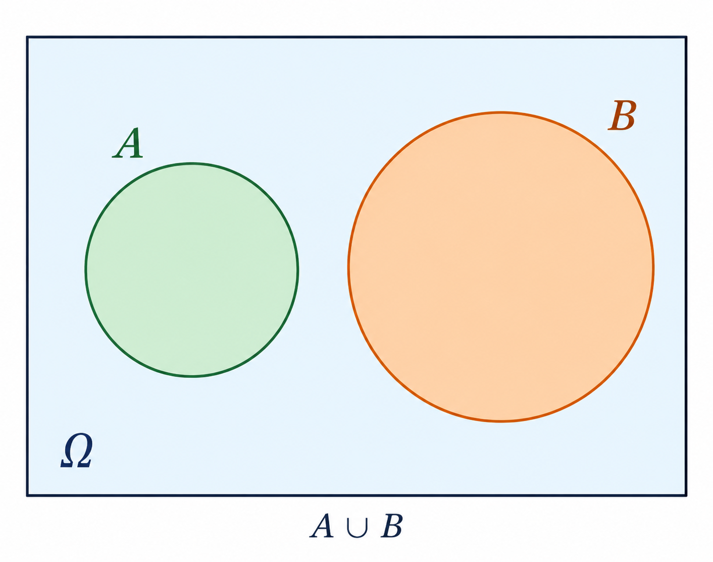
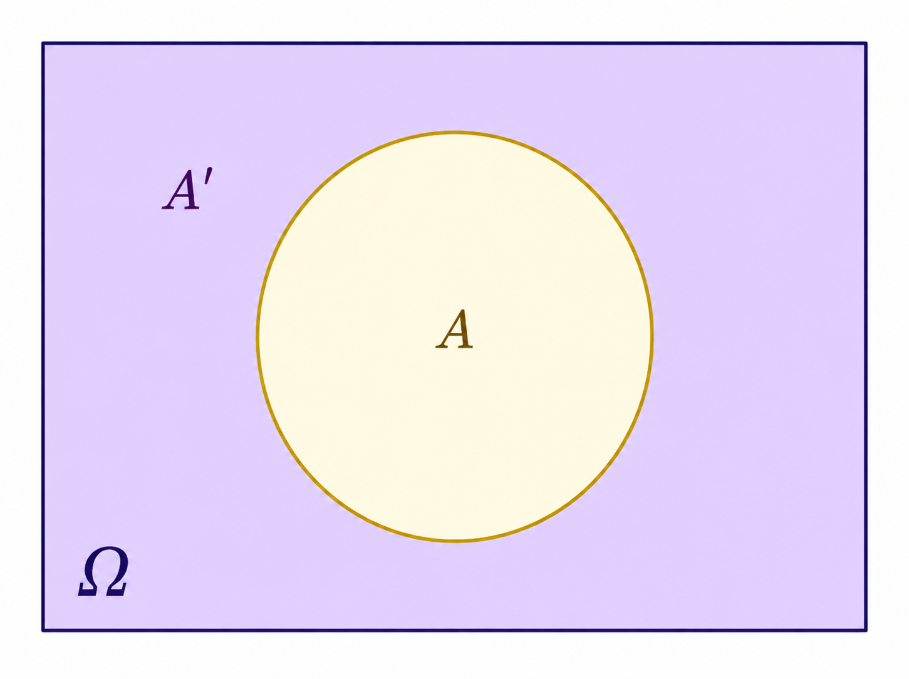
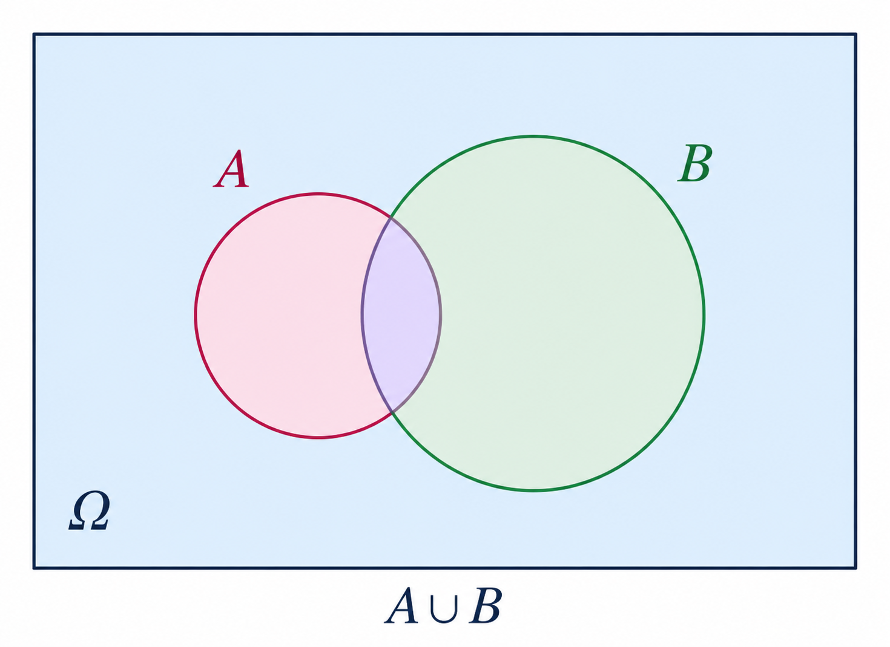
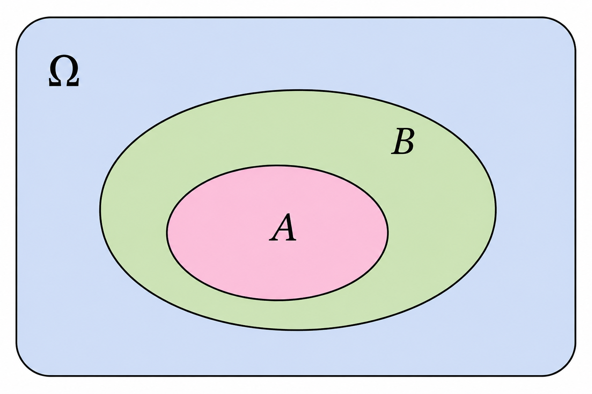
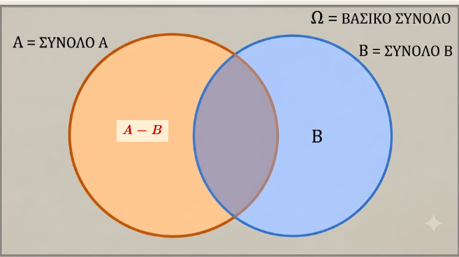
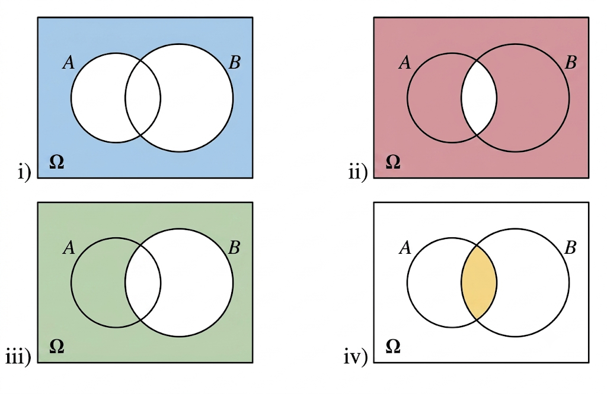

1 Η έννοια της πιθανότητας
1.1 Έννοια και Ιδιότητες Σχετικής Συχνότητας
Η σχετική συχνότητα (relative frequency) αποτελεί μια θεμελιώδη έννοια τόσο στη Στατιστική όσο και στη Θεωρία Πιθανοτήτων, καθώς συνδέει τα εμπειρικά δεδομένα με την έννοια της πιθανότητας.
Ορισμός
Η σχετική συχνότητα ορίζεται ως εξής:
Στο πλαίσιο των πιθανοτήτων: Αν σε \(\nu\) εκτελέσεις ενός πειράματος τύχης ένα ενδεχόμενο \(A\) πραγματοποιείται \(\kappa\) φορές, τότε ο λόγος \(\dfrac{\kappa}{\nu}\) ονομάζεται σχετική συχνότητα του \(A\) και συμβολίζεται με \(f_A\).
Αν ο δειγματικός χώρος ενός πειράματος είναι το πεπερασμένο σύνολο \[Ω=\{ω_1,ω_2,...,ω_μ\}\] και σε ν εκτελέσεις του πειράματος αυτού τα απλά ενδεχόμενα \[\{ω_1,ω_2,...,ω_μ\}\] πραγματοποιούνται
\[\{κ_1,{κ_2},...,κ_μ\}\] φορές αντιστοίχως, τότε για τις σχετικές συχνότητες \[f_1=\dfrac{κ_1}{ν}, f_2=\dfrac{κ_2}{ν}, ........., f_μ=\dfrac{κ_μ}{ν}\] των απλών ενδεχομένων θα έχουμε τις Ιδιότητες:
Οι σχετικές συχνότητες χαρακτηρίζονται από τις εξής ιδιότητες:
Περιορισμός τιμών: \(0≤ f_i=\dfrac{k_i}{ν}≤1\), i=1,2,…,μ (αφού \(0≤ κ_i≤ ν\) )
Άθροισμα μονάδας: \(f_1+f_2+..... +f_μ=\dfrac{κ_1+κ_2+.....+κ_μ}{ν}=\dfrac{ν}{ν}=1\).
Έκφραση επί τοις %: Συχνά οι σχετικές συχνότητες εκφράζονται ως ποσοστά επί τοις εκατό (\(f_i\%\)), πολλαπλασιάζοντας την τιμή του λόγου επί 100,
- Στο πλαίσιο της στατιστικής: Σχετική συχνότητα (\(f_i\)) μιας τιμής \(x_i\) μιας μεταβλητής ονομάζεται ο λόγος της συχνότητας \(\nu_i\) (δηλαδή του πλήθους των ατόμων που έχουν την τιμή αυτή) προς την ολική συχνότητα \(n\) (το μέγεθος του δείγματος ή του πληθυσμού),. Ο τύπος υπολογισμού είναι: \[f_i = \frac{\nu_i}{n} \text{}\]
Παραδείγματα
- Ρίψη Ζαριού: Σε ένα πείραμα όπου ρίχτηκε ένα ζάρι 30 φορές, η ένδειξη «1» εμφανίστηκε 5 φορές. Η συχνότητα είναι \(\nu_1 = 5\) και η σχετική συχνότητα είναι \(f_1 = \dfrac{5}{30} \approx 0,16\) ή \(16,6\%\).
- Οικογένειες και Παιδιά: Σε δείγμα 100 οικογενειών, βρέθηκε ότι 8 οικογένειες δεν έχουν παιδιά. Η σχετική συχνότητα της τιμής «0 παιδιά» είναι \(f = \dfrac{8}{100} = 0,08\) ή \(8\%\).
- Συχνότητα Γκολ: Καταγράφηκε ο αριθμός των τερμάτων που πέτυχαν 18 ομάδες μια Κυριακή. Αν 6 ομάδες πέτυχαν 1 τέρμα, η σχετική συχνότητα είναι \(f = \dfrac{6}{18} \approx 0,333\) ή \(33,3\%\).
1.2 Γραφική Παράσταση (ΣΤΑΤΙΣΤΙΚΗ ΠΡΟΗΓΟΥΜΕΝΩΝ ΤΑΞΕΩΝ )
Οι σχετικές συχνότητες μπορούν να αναπαρασταθούν οπτικά με διάφορους τρόπους:
- Ραβδόγραμμα ή Διάγραμμα Συχνοτήτων: Χρησιμοποιούνται ράβδοι ή γραμμές με ύψος ανάλογο της σχετικής συχνότητας,.
- Κυκλικό Διάγραμμα: Ο κύκλος χωρίζεται σε τομείς των οποίων οι γωνίες είναι ανάλογες των σχετικών συχνοτήτων (\(\alpha_i = f_i \cdot 360^\circ\)),.
- Ιστόγραμμα: Χρησιμοποιείται για ομαδοποιημένα δεδομένα σε κλάσεις, όπου το εμβαδόν κάθε ορθογωνίου είναι ίσο με την αντίστοιχη σχετική συχνότητα,.
1.3 Η έννοια της πιθανότητας
Η έννοια της πιθανότητας αποτελεί ένα «μέτρο προσδοκίας» με το οποίο ποσοτικοποιούμε την αβεβαιότητα για την πραγματοποίηση ενός ενδεχομένου κατά την εκτέλεση ενός πειράματος τύχης. Η θεωρία πιθανοτήτων παρέχει το αναλυτικό πλαίσιο για τη μελέτη φαινομένων που διέπονται από την τυχαιότητα, μεταβαίνοντας από την εμπειρική διαίσθηση στη μαθηματική ακρίβεια.
Σχετική Συχνότητα και Νόμος των Μεγάλων Αριθμών
Πριν τον αυστηρό μαθηματικό ορισμό, η πιθανότητα προσεγγίζεται μέσω της σχετικής συχνότητας (\(f_A\)).
Ορισμός: Αν σε \(v\) εκτελέσεις ενός πειράματος ένα ενδεχόμενο \(A\) πραγματοποιείται \(\kappa\) φορές, τότε ο λόγος \(f_A = \dfrac{\kappa}{v}\) ονομάζεται σχετική συχνότητα.
Νόμος των Μεγάλων Αριθμών (Στατιστική Ομαλότητα): Όταν ο αριθμός των δοκιμών αυξάνεται απεριόριστα, οι σχετικές συχνότητες σταθεροποιούνται γύρω από ορισμένους αριθμούς, οι οποίοι αποτελούν τις πιθανότητες των ενδεχομένων.
Κλασικός Ορισμός της Πιθανότητας (Laplace)
Ο κλασικός ορισμός χρησιμοποιείται όταν ο δειγματικός χώρος \(\Omega\) είναι πεπερασμένος και όλα τα αποτελέσματα είναι ισοπίθανα (π.χ. ρίψη αμερόληπτου ζαριού).
- Τύπος: Η πιθανότητα ενός ενδεχομένου \(A\) ισούται με το πηλίκο του πλήθους των ευνοϊκών περιπτώσεων προς το πλήθος των δυνατών περιπτώσεων: \[P(A) = \frac{N(A)}{N(\Omega)}\].
Αξιωματικός Ορισμός της Πιθανότητας (Kolmogorov)
Αποτελεί τη σύγχρονη μαθηματική θεμελίωση. Σε κάθε απλό ενδεχόμενο \(\{\omega_i\}\) αντιστοιχίζεται ένας πραγματικός αριθμός \(P(\omega_i)\) ώστε να ισχύουν τα εξής αξιώματα:
- Μη αρνητικότητα: \(0 \leq P(\omega_i) \leq 1\) για κάθε \(i\).
- Νορμαλισμός: \(P(\omega_1) + P(\omega_2) + \dots + P(\omega_n) = 1\) (ή \(P(\Omega) = 1\)).
- Προσθετικότητα: Για οποιαδήποτε ασυμβίβαστα ενδεχόμενα \(A\) και \(B\), ισχύει \(P(A \cup B) = P(A) + P(B)\).
Βασικές Ιδιότητες και Κανόνες Λογισμού
- Για οποιαδήποτε ασυμβίβαστα μεταξύ τους ενδεχόμενα Α και Β ισχύει:

\(P(AUB)=P(A)+P(B)\)
- Βέβαιο ενδεχόμενο: \(P(\Omega) = 1\).
- Αδύνατο ενδεχόμενο: \(P(\emptyset) = 0\).
- Περιορισμός τιμών: Για κάθε ενδεχόμενο \(A\), ισχύει \(0 \leq P(A) \leq 1\).
- Συμπληρωματικό ενδεχόμενο: \(P(A') = 1 - P(A)\).

- Προσθετικός νόμος: Για δύο τυχαία ενδεχόμενα \(A\) και \(B\), \(P(A \cup B) = P(A) + P(B) - P(A \cap B)\).

- Σχέση υποσυνόλου: Αν \(A \subseteq B\), τότε \(P(A) \leq P(B)\).

- Για δύο ενδεχόμενα Α και Β ενός δειγματικού χώρου Ω ισχύει:
\(P(A-B)=P(A)-P(A∩B)\)

Χαρακτηριστικά Παραδείγματα
- Ρίψη αμερόληπτου ζαριού: Ο δειγματικός χώρος είναι \(\Omega = \{1, 2, 3, 4, 5, 6\}\). Το ενδεχόμενο \(A\) «άρτια ένδειξη» είναι το \(\{2, 4, 6\}\). Η πιθανότητα είναι \(P(A) = 3/6 = 0,5\).
- Κουτί με χρωματιστές σφαίρες: Αν ένα κουτί έχει 2 κόκκινες, 4 μπλε και 5 άσπρες μπάλες (\(N(\Omega)=11\)), η πιθανότητα να επιλέξουμε κόκκινη είναι \(P(K) = 2/11\).
- Τράπουλα: Η πιθανότητα να τραβήξουμε τυχαία μια «Ντάμα» από μια τράπουλα 52 φύλλων είναι \(4/52 = 1/13\), ενώ η πιθανότητα για «Ντάμα Κούπα» είναι \(1/52\).
- Οικογένεια με παιδιά: Σε οικογένεια με 3 παιδιά, η πιθανότητα να γεννηθεί τουλάχιστον ένα αγόρι υπολογίζεται πιο εύκολα μέσω του συμπληρώματος (1 - πιθανότητα για 3 κορίτσια): \(1 - 1/8 = 7/8\).
- Σύνθετο πείραμα (δύο ζάρια): Η πιθανότητα να φέρουμε άθροισμα 7 στη ρίψη δύο ζαριών (\(N(\Omega)=36\)) είναι \(6/36 = 1/6\), καθώς οι ευνοϊκές περιπτώσεις είναι οι \(\{(1,6), (6,1), (2,5), (5,2), (3,4), (4,3)\}\).
1.4 Ασκήσεις
- Ρίχνουμε δύο “αμερόληπτα” ζάρια. Να βρεθεί:
- Α. η πιθανότητα να φέρουμε ως αποτέλεσμα “Το άθροισμα των ενδείξεων των ζαριών να είναι 8”
- Β. η πιθανότητα να φέρουμε ως αποτέλεσμα “Το γινόμενο των ενδείξεων των ζαριών να είναι 12”.
- Γ. η πιθανότητα να φέρουμε ως αποτέλεσμα “Η διαφορά των ενδείξεων των ζαριών να είναι 2”
- Δ. η πιθανότητα να φέρουμε ως αποτέλεσμα “Το πηλίκο των ενδείξεων των ζαριών να είναι 3”
Κάντε έναν πίνακα διπλής εισόδου για να βρείτε τον δειγματικό χώρο
- Για δύο ενδεχόμενα Α και Β ενός δειγματικού χώρου Ω δίνονται P(A)=0,6 , P(B)=0,3 και P(A∩B)=0,1. Να βρεθεί η πιθανότητα των ενδεχομένων:
- Να μην πραγματοποιηθεί κανένα από τα Α και Β.
- Να πραγματοποιηθεί μόνο ένα από τα Α και Β.
- Να πραγματοποιηθεί είτε το Α είτε το Β.
- Για δύο ενδεχόμενα \(A\) και \(B\) ενός δειγματικού χώρου \(\Omega\) ισχύουν \(P(A) = 0,7\) και \(P(B) = 0,4\).
i) Να εξεταστεί αν τα \(A\) και \(B\) είναι ασυμβίβαστα.
ii) Να αποδείξετε ότι \(0,1 \leq P(A \cap B) \leq 0,4\).
Λύση
i) Εξέταση αν είναι ασυμβίβαστα
Αν δύο ενδεχόμενα \(A\) και \(B\) είναι ασυμβίβαστα, τότε δεν έχουν κοινά στοιχεία (η τομή τους είναι το κενό σύνολο, \(A \cap B = \emptyset\)) και η πιθανότητα της ένωσής τους δίνεται από τον απλό προσθετικό νόμο:
\[P(A \cup B) = P(A) + P(B)\]
Αν υποθέσουμε ότι τα \(A\) και \(B\) είναι ασυμβίβαστα, τότε:
\[P(A \cup B) = 0,7 + 0,4 = 1,1\]
Σφάλμα: Αυτό είναι αδύνατο, καθώς η πιθανότητα οποιουδήποτε ενδεχομένου δεν μπορεί να ξεπερνάει το \(1\) (\(P(A \cup B) \leq 1\)).
Επομένως, η υπόθεσή μας ήταν λανθασμένη. Τα ενδεχόμενα \(A\) και \(B\) δεν είναι ασυμβίβαστα
ii) Απόδειξη της ανισότητας \(0,1 \leq P(A \cap B) \leq 0,4\)
Για να αποδείξουμε μια διπλή ανισότητα, τη σπάμε σε δύο μέρη:
1. Απόδειξη του άνω ορίου: \(P(A \cap B) \leq 0,4\)
Η τομή \(A \cap B\) είναι υποσύνολο τόσο του \(A\) όσο και του \(B\). Επομένως, η πιθανότητα της τομής δεν μπορεί να είναι μεγαλύτερη από την πιθανότητα του μικρότερου συνόλου.
- Επειδή \(A \cap B \subseteq B\), ισχύει:
\[P(A \cap B) \leq P(B) \Rightarrow P(A \cap B) \leq 0,4\]
2. Απόδειξη του κάτω ορίου: \(0,1 \leq P(A \cap B)\) Γνωρίζουμε από τον γενικό προσθετικό νόμο ότι:
\[P(A \cup B) = P(A) + P(B) - P(A \cap B)\]
Λύνοντας ως προς την τομή, έχουμε:
\[P(A \cap B) = P(A) + P(B) - P(A \cup B)\]
Επειδή για οποιοδήποτε ενδεχόμενο ισχύει \(P(A \cup B) \leq 1\), αν αντικαταστήσουμε το \(P(A \cup B)\) με τη μέγιστη τιμή του (\(1\)), θα πάρουμε την ελάχιστη δυνατή τιμή για την τομή:
\[P(A \cap B) \geq P(A) + P(B) - 1\]
\[P(A \cap B) \geq 0,7 + 0,4 - 1\]
\[P(A \cap B) \geq 1,1 - 1 \Rightarrow P(A \cap B) \geq 0,1\]
Συνδυάζοντας τα δύο αποτελέσματα, αποδείχθηκε ότι:
\[0,1 \leq P(A \cap B) \leq 0,4\]
- Χρησιμοποιήστε τις πράξεις των συνόλων για να περιγράψετε τα χρωματισμένα μέρη στα παρακάτω σχήματα (Venn).

- Τα συμπληρωματικά δύο ενδεχόμενων είναι ξένα μεταξύ τους;
κάντe το διάγραμμα Venn
- Αν ρίξουμε δύο δίκαια (συνήθη) ζάρια και προσθέσουμε τις ενδείξεις τους, το άθροισμα μπορεί να είναι ένας άρτιος αριθμός (δηλαδή 2, 4, 6, 8, 10, 12) ή ένας περιττός (μονός) αριθμός (δηλαδή 3, 5, 7, 9, 11).
Ένας μαθητής ισχυρίζεται το εξής: «Εφόσον έχουμε 6 δυνατά άρτια αθροίσματα και 5 δυνατά περιττά αθροίσματα, η πιθανότητα να φέρουμε άρτιο άθροισμα είναι \(\dfrac{6}{11}\) και η πιθανότητα να φέρουμε περιττό είναι \(\dfrac{5}{11}\)».
Τι είναι λάθος στο επιχείρημα αυτό; Ποιο είναι το σωστό;
Λύση
Τι είναι λάθος:
Το λάθος στο επιχείρημα του μαθητή είναι ότι αντιμετωπίζει τα δυνατά αθροίσματα (τις τιμές από το 2 έως το 12) ως ισοπίθανα ενδεχόμενα.
Στην πραγματικότητα, κάθε άθροισμα δεν έχει την ίδια πιθανότητα να εμφανιστεί. Για παράδειγμα, το άθροισμα \(2\) μπορεί να προκύψει μόνο με έναν τρόπο (να φέρουμε 1 στο πρώτο ζάρι και 1 στο δεύτερο: \((1,1)\)). Αντίθετα, το άθροισμα \(3\) μπορεί να προκύψει με δύο τρόπους (\((1,2)\) ή \((2,1)\)), ενώ το άθροισμα \(7\) μπορεί να προκύψει με έξι διαφορετικούς τρόπους. Επομένως, δεν μπορούμε απλά να μετρήσουμε το πλήθος των αθροισμάτων για να βρούμε την πιθανότητα.
Ποιο είναι το σωστό:
Για να βρούμε τη σωστή πιθανότητα, πρέπει να εξετάσουμε τον πραγματικό δειγματικό χώρο \(\Omega\) του πειράματος, ο οποίος αποτελείται από όλα τα δυνατά ζευγάρια ενδείξεων των δύο ζαριών.
Αφού κάθε ζάρι έχει 6 έδρες, το πλήθος των ισοπίθανων αποτελεσμάτων είναι:
\[N(\Omega) = 6 \times 6 = 36\]
Αν καταγράψουμε όλους τους 36 δυνατούς συνδυασμούς, θα διαπιστώσουμε ότι:
Οι συνδυασμοί που δίνουν άρτιο άθροισμα είναι ακριβώς 18 (π.χ. \((1,1), (1,3), (1,5), (2,2), \dots\)).
Οι συνδυασμοί που δίνουν περιττό άθροισμα είναι επίσης ακριβώς 18 (π.χ. \((1,2), (1,4), (1,6), (2,1), \dots\)).
Επομένως, οι σωστές πιθανότητες είναι:
Πιθανότητα για άρτιο άθροισμα: \(P(\text{Άρτιο}) = \dfrac{18}{36} = \dfrac{1}{2} = 50\%\)
Πιθανότητα για περιττό άθροισμα: \(P(\text{Περιττό}) = \dfrac{18}{36} = \dfrac{1}{2} = 50\%\)
- Αν δύο ενδεχόμενα \(A\) και \(B\) είναι ασυμβίβαστα (ξένα μεταξύ τους), είναι απαραίτητα και συμπληρωματικά;
Απάντηση / Επεξήγηση:
Όχι, δεν είναι απαραίτητα συμπληρωματικά.
Γιατί: Για να είναι δύο ενδεχόμενα συμπληρωματικά, πρέπει να ικανοποιούν δύο συνθήκες ταυτόχρονα: να είναι ξένα μεταξύ τους (\(A \cap B = \emptyset\)) και η ένωσή τους να ισούται με ολόκληρο τον δειγματικό χώρο (\(A \cup B = \Omega\)).
Παράδειγμα: Αν ρίξουμε ένα ζάρι, ο δειγματικός χώρος είναι \(\Omega = \{1, 2, 3, 4, 5, 6\}\). Ας πάρουμε τα ενδεχόμενα \(A = \{1\}\) (να φέρουμε 1) και \(B = \{2\}\) (να φέρουμε 2). Τα ενδεχόμενα αυτά είναι ξένα μεταξύ τους (\(A \cap B = \emptyset\)), αλλά δεν είναι συμπληρωματικά, καθώς η ένωσή τους είναι \(A \cup B = \{1, 2\} \neq \Omega\).
- Αν δύο ενδεχόμενα \(A\) και \(B\) είναι συμπληρωματικά, τότε τι μπορείτε να πείτε για την τομή των συμπληρωματικών τους ενδεχομένων \(A'\) και \(B'\);
Απάντηση / Επεξήγηση:
Η τομή τους είναι το κενό σύνολο (\(A' \cap B' = \emptyset\)).
Γιατί: Εφόσον τα \(A\) και \(B\) είναι συμπληρωματικά, εξ ορισμού ισχύει ότι \(B = A'\) και \(A = B'\).
Αντικαθιστώντας αυτά στη ζητούμενη τομή, έχουμε:
\[A' \cap B' = B \cap A = A \cap B\]
- Όμως, επειδή τα \(A\) και \(B\) είναι εξ αρχής συμπληρωματικά, γνωρίζουμε ότι είναι ξένα μεταξύ τους, δηλαδή \(A \cap B = \emptyset\). Συνεπώς, και η τομή των συμπληρωματικών τους είναι το κενό σύνολο (\(A' \cap B' = \emptyset\)).
- Από μια τράπουλα με 52 φύλλα παίρνουμε ένα στην τύχη. Να βρείτε τις πιθανότητες των ενδεχομένων:
- i) το χαρτί να είναι Ρήγας (Κ).
- ii) το χαρτί να είναι Ρήγας χρώματος κόκκινου (Κ).
- iii) Το χαρτί να φέρει αριθμό \(\le\) του 5.
Να βρείτε την πιθανότητα στη ρίψη δύο νομισμάτων να εμφανιστεί μια «κεφαλή» και μια «γράμματα» (ανεξαρτήτως σειράς).
Ένα κουτί περιέχει μολύβια: 8 μπλε, 12 κόκκινα, 6 πράσινα και 4 κίτρινα. Παίρνουμε τυχαίως ένα μολύβι. Να βρείτε τις πιθανότητες των ενδεχομένων το μολύβι να είναι:
- i) κόκκινο.
- ii) μπλε ή κίτρινο.
- iii) ούτε πράσινο ούτε κίτρινο.
- Σε μια ομάδα από 40 εργαζόμενους, ρωτήθηκαν πόσα αυτοκίνητα έχει η οικογένειά τους. Οι απαντήσεις τους φαίνονται στον επόμενο πίνακα:
| Αριθμός εργαζομένων | 5 | 18 | 12 | 4 | 1 |
|---|---|---|---|---|---|
| Αριθμός αυτοκινήτων | 0 | 1 | 2 | 3 | 4 |
Αν επιλέξουμε τυχαία έναν εργαζόμενο, να βρείτε την πιθανότητα η οικογένειά του να έχει συνολικά δύο αυτοκίνητα.
- Έστω τα σύνολα \(\Omega = \{ \omega \in \mathbb{N} \mid 1 \leq \omega \leq 15 \}\), \(A = \{ \omega \in \Omega \mid \omega \text{ πολλαπλάσιο του 2} \}\) και \(B = \{ \omega \in \Omega \mid \omega \text{ πολλαπλάσιο του 5} \}\). Αν επιλέξουμε τυχαίως ένα στοιχείο του \(\Omega\), να βρείτε τις πιθανότητες:
- i) να ανήκει στο \(A\).
- ii) να μην ανήκει στο \(B\).
- Σε ένα τουρνουά σκακιού η πιθανότητα να κερδίσει ο Γιάννης είναι \(25\%\), η πιθανότητα να κερδίσει ο Κώστας είναι \(35\%\) και η πιθανότητα να κερδίσει ο Δημήτρης είναι \(15\%\). Να βρείτε την πιθανότητα:
- i) να κερδίσει ο Γιάννης ή ο Κώστας.
- ii) να μην κερδίσει ο Γιάννης ή ο Δημήτρης.
Για τα ενδεχόμενα \(A\) και \(B\) ενός δειγματικού χώρου \(\Omega\) ισχύουν \(P(A) = \dfrac{11}{20}\), \(P(B) = \dfrac{2}{5}\) και \(P(A \cup B) = \dfrac{3}{4}\). Να βρείτε την \(P(A \cap B)\).
Για τα ενδεχόμενα \(A\) και \(B\) ενός δειγματικού χώρου \(\Omega\) ισχύουν \(P(B) = \dfrac{1}{3}\), \(P(A \cup B) = \dfrac{7}{12}\) και \(P(A \cap B) = \dfrac{1}{6}\). Να βρείτε την \(P(A)\).
Για τα ενδεχόμενα \(A\) και \(B\) του ίδιου δειγματικού χώρου είναι γνωστό ότι \(P(A) = P(B)\), \(P(A \cup B) = 0,8\) και \(P(A \cap B) = 0,3\). Να βρείτε την \(P(B)\).
Για τα ενδεχόμενα \(A\) και \(B\) του ίδιου δειγματικού χώρου \(\Omega\) δίνεται ότι \(P(B) = \dfrac{1}{2}\), \(P(A') = \dfrac{3}{5}\) και \(P(A \cap B) = \dfrac{1}{10}\). Να βρείτε την \(P(A \cup B)\).
Για δύο ενδεχόμενα \(A\) και \(B\) του ίδιου δειγματικού χώρου \(\Omega\) να δείξετε ότι \(P(A) \leq P(A \cup B)\).
Ένα γραφείο ενοικίασης αυτοκινήτων διαθέτει οχήματα με χειροκίνητο (M) ή αυτόματο (A) κιβώτιο ταχυτήτων. Το \(40\%\) των πελατών επιλέγει χειροκίνητο, το \(50\%\) επιλέγει αυτόματο και το \(10\%\) νοικιάζει κατά καιρούς και τους δύο τύπους. Ποια είναι η πιθανότητα ένας πελάτης που επιλέγεται τυχαία να έχει νοικιάσει τουλάχιστον έναν από τους δύο τύπους κιβωτίου;
Το \(15\%\) των φοιτητών ενός πανεπιστημίου μιλάει Ισπανικά, το \(8\%\) μιλάει Ιταλικά και το \(3\%\) μιλάει και τις δύο γλώσσες. Για έναν φοιτητή που επιλέγεται τυχαία ποια είναι η πιθανότητα να μιλάει:
- α) τουλάχιστον μία από τις δύο γλώσσες;
- β) μόνο μία από τις δύο γλώσσες;
- Σε μια κατασκήνωση το \(70\%\) των παιδιών συμμετέχει στο ποδόσφαιρο, το \(40\%\) στο μπάσκετ και το \(25\%\) και στα δύο αθλήματα. Επιλέγουμε τυχαίως ένα παιδί. Να βρείτε την πιθανότητα να μη συμμετέχει σε κανένα από τα δύο αθλήματα.
Λύση
Δεδομένα της Άσκησης:
- Ποσοστό παιδιών στο ποδόσφαιρο: \(70\%\)
- Ποσοστό παιδιών στο μπάσκετ: \(40\%\)
- Ποσοστό παιδιών και στα δύο αθλήματα: \(25\%\)
Βήμα 1: Ορισμός ενδεχομένων και πιθανοτήτων
Ορίζουμε τα ενδεχόμενα για ένα τυχαία επιλεγμένο παιδί:
\(A\): «Το παιδί συμμετέχει στο ποδόσφαιρο», με πιθανότητα \(P(A) = 70\% = 0,70\)
\(B\): «Το παιδί συμμετέχει στο μπάσκετ», με πιθανότητα \(P(B) = 40\% = 0,40\)
Η συμμετοχή και στα δύο αθλήματα εκφράζεται από την τομή των ενδεχομένων (\(A \cap B\)):
- \(P(A \cap B) = 25\% = 0,25\)
Βήμα 2: Εύρεση της πιθανότητας να συμμετέχει σε τουλάχιστον ένα άθλημα
Το ενδεχόμενο ένα παιδί να συμμετέχει στο ποδόσφαιρο ή στο μπάσκετ (δηλαδή σε τουλάχιστον ένα από τα δύο) εκφράζεται από την ένωση των ενδεχομένων (\(A \cup B\)).
Χρησιμοποιούμε τον προσθετικό νόμο των πιθανοτήτων:
\[P(A \cup B) = P(A) + P(B) - P(A \cap B)\]
Αντικαθιστούμε τις τιμές:
\[P(A \cup B) = 0,70 + 0,40 - 0,25\]
\[P(A \cup B) = 1,10 - 0,25 = 0,85 \quad (\text{ή } 85\%)\]
Βήμα 3: Εύρεση της πιθανότητας να μη συμμετέχει σε κανένα άθλημα
Το ενδεχόμενο να μη συμμετέχει σε κανένα από τα δύο αθλήματα είναι το συμπληρωματικό του να συμμετέχει σε τουλάχιστον ένα. Δηλαδή, αναζητούμε την πιθανότητα \(P((A \cup B)')\).
Γνωρίζουμε ότι η πιθανότητα ενός συμπληρωματικού ενδεχομένου δίνεται από τη σχέση:
\[P((A \cup B)') = 1 - P(A \cup B)\]
Αντικαθιστούμε τη τιμή που βρήκαμε στο προηγούμενο βήμα:
\[P((A \cup B)') = 1 - 0,85 = 0,15 \quad (\text{ή } 15\%)\]
Απάντηση:
Η πιθανότητα ένα παιδί που επιλέγεται τυχαία να μη συμμετέχει σε κανένα από τα δύο αθλήματα είναι \(0,15\) ή \(15\%\).
- Αν για τα ενδεχόμενα \(A\) και \(B\) ενός δειγματικού χώρου \(\Omega\) έχουμε \(P(A)=x\), \(P(B)=y\) και \(P(A \cap B)=z\), να βρείτε εκφρασμένες με τη βοήθεια των \(x, y, z\) τις πιθανότητες:
- i) να μην πραγματοποιηθεί κανένα από τα \(A\) και \(B\).
- ii) να πραγματοποιηθεί τουλάχιστον ένα από τα \(A\) και \(B\).
- iii) να πραγματοποιηθεί μόνο το \(A\) ή μόνο το \(B\).
Σε μια εταιρεία το \(20\%\) των εργαζομένων δεν μιλάνε Αγγλικά, το \(35\%\) δεν μιλάνε Γαλλικά και το \(15\%\) δεν μιλάνε ούτε Αγγλικά ούτε Γαλλικά. Επιλέγουμε τυχαίως έναν εργαζόμενο. Να βρείτε την πιθανότητα να μιλάει και Αγγλικά και Γαλλικά.
Αν \(\dfrac{P(A)}{P(A')} = \dfrac{2}{3}\), να βρείτε τις πιθανότητες \(P(A)\) και \(P(A')\).
Αν \(0 < P(A) < 1\), να αποδείξετε ότι:
\[P(A) + \dfrac{1}{P(A)} \geq 2\]
(Σημείωση: Μια εξαιρετική εναλλακτική με την ίδια ακριβώς αλγεβρική δομή είναι να δειχθεί ότι \(P(A) \cdot P(A') \leq \dfrac{1}{4}\))
- Αν \(A\) και \(B\) είναι ενδεχόμενα του ίδιου δειγματικού χώρου \(\Omega\) με \(P(A)=0,5\) και \(P(B)=0,8\), να δείξετε ότι:
\[0,3 \leq P(A \cap B) \leq 0,5\]
- Για δύο ενδεχόμενα \(A\) και \(B\) του ίδιου δειγματικού χώρου \(\Omega\) να δείξετε ότι:
\[P(A) - P(B') \leq P(A \cap B)\]
- Ένα κουτί περιέχει 10 κόκκινες, 15 πράσινες, 20 γκρι, 5 μαύρες και 30 άσπρες μπάλες. Επιλέγουμε μία τυχαία. Βρείτε την πιθανότητα να είναι:
- α) κόκκινη,
- β) μαύρη,
- γ) άσπρη.
- Ρίχνουμε ένα αμερόληπτο ζάρι. Βρείτε την πιθανότητα των ενδεχομένων:
- Α: «ένδειξη μικρότερη του 5»,
- Β: «άρτια ένδειξη μεγαλύτερη ή ίση του 4».
- Γράφουμε έναν φυσικό αριθμό από το 1 έως το 30. Ποια είναι η πιθανότητα να είναι:
- α) πολλαπλάσιο του 3,
- β) πολλαπλάσιο του 4,
- γ) πολλαπλάσιο του 6;
- Ρίχνουμε ένα νόμισμα 3 φορές. Βρείτε την πιθανότητα:
- α) να έχουμε ακριβώς 2 κορώνες,
- β) τουλάχιστον 2 γράμματα.
Ρίχνουμε δύο ζάρια ταυτόχρονα. Ποια είναι η πιθανότητα το άθροισμα των ενδείξεων να είναι 7;
Από μια τράπουλα 52 φύλλων επιλέγουμε ένα στην τύχη. Βρείτε την πιθανότητα να είναι:
- α) Βαλές,
- β) Ντάμα Κούπα.
- Σε μια οικογένεια με 3 παιδιά, ποια είναι η πιθανότητα να υπάρχει τουλάχιστον ένα αγόρι;
(Υπόδειξη: Χρησιμοποιήστε το συμπληρωματικό ενδεχόμενο).
Για δύο ενδεχόμενα \(A\) και \(B\) ισχύει \(P(A) = P(B)\), \(P(A \cup B) = 0,6\) και \(P(A \cap B) = 0,2\). Να βρείτε την \(P(A)\).
Αν \(P(B') = 3/4\), \(P(A \cup B) = 3/5\) και \(P(A \cap B) = 3/10\), υπολογίστε τις \(P(B)\) και \(P(A)\).
Αν \(P(A) = 0,4\), \(P(B) = 0,3\) και \(P(A \cap B) = 0,1\), βρείτε την πιθανότητα να πραγματοποιηθεί:
- α) μόνο το \(A\),
- β) μόνο ένα από τα \(A\) και \(B\).
Με τα δεδομένα της προηγούμενης άσκησης (\(P(A)=0,4, P(B)=0,3, P(A \cap B)=0,1\)), βρείτε την πιθανότητα να μην πραγματοποιηθεί κανένα από τα \(A\) και \(B\).
Άν \(P(A') \leq 11/25\) και \(P(B') \leq 13/25\), δείξτε ότι η τομή τους \(A \cap B\) δεν είναι το κενό σύνολο.
Αν \(P(A) = 1/4\), \(P(B) = 1/3\) και \(P(A \cap B) = 1/6\), βρείτε την πιθανότητα της ένωσης \(P(A \cup B)\).
Αν \(P(A) = 0,7\) και \(P(B) = 0,6\), δείξτε ότι τα \(A\) και \(B\) δεν είναι ασυμβίβαστα.
Αν \(A, B\) είναι ασυμβίβαστα με \(P(A \cup B) = 14/17\) και \(P(A)/P(B) = 3/4\), να βρείτε τις \(P(A)\) και \(P(B)\).
Επιλέγουμε ένα φύλλο από τράπουλα. Έστω \(A\) το ενδεχόμενο να είναι σπαθί και \(B\) να είναι καρό. Είναι ασυμβίβαστα; Ποια είναι η \(P(A \cup B)\);
Σε μια τάξη 28 μαθητών, τα μισά αγόρια και τα μισά κορίτσια έχουν υπολογιστή. Αν η πιθανότητα ένα αγόρι να μην έχει υπολογιστή είναι 3/14, βρείτε πόσα είναι τα κορίτσια.
Σε ένα σχολείο το 80% μαθαίνει Αγγλικά, το 30% Γαλλικά και το 20% και τις δύο γλώσσες. Επιλέγουμε τυχαία έναν μαθητή. Ποια η πιθανότητα να μη μαθαίνει καμία από τις δύο γλώσσες;
Το 10% ενός πληθυσμού έχει υπέρταση, το 6% καρδιακή νόσο και το 2% και τα δύο. Βρείτε την πιθανότητα ένα τυχαίο άτομο να έχει τουλάχιστον μία από τις δύο ασθένειες.
Οι πιθανότητες \(P(A)\) και \(P(B)\) είναι ρίζες της εξίσωσης \(6x^2 - x - 1 = 0\). Αν \(P(A) < P(B)\) και \(P(A \cap B) = 1/6\), υπολογίστε την \(P(A \cup B)\).
ΚΑΛΗ ΜΕΛΕΤΗ!